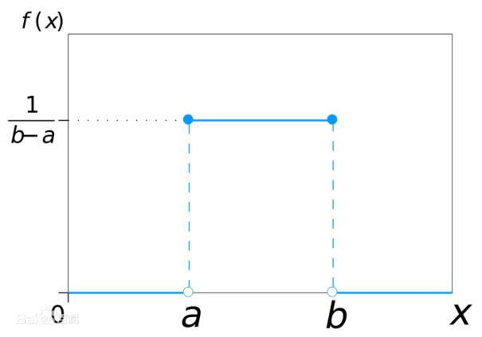
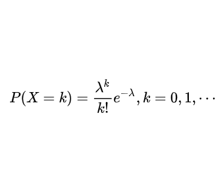
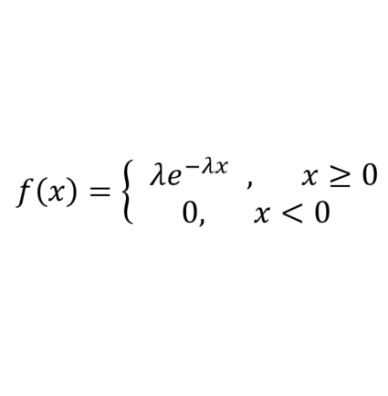
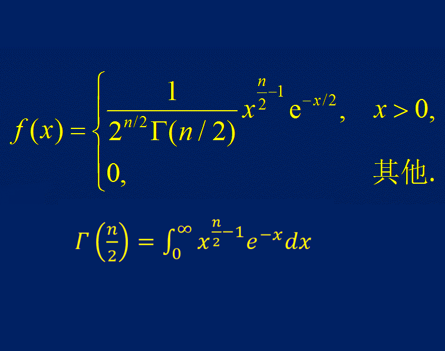

Números aleatorios
En Verilog, se utiliza la tarea de sistema $random(seed) para generar números aleatorios, donde seed es la semilla del número aleatorio.
Si el valor de seed es diferente, los números aleatorios generados también son diferentes. Si seed es el mismo, los números aleatorios generados también son iguales.
Se puede asignar un valor inicial a seed, o se puede omitir la opción seed; el valor inicial predeterminado de seed es 0.
El código para llamar a $random sin usar la opción seed y especificando seed y modificándolo es el siguiente:
Ejemplo
integer seed ;
initial begin
seed = 2 ;
#30 ;
seed = 10 ;
end
//no seed
reg [15:0] randnum_noseed ;
always@(posedge clk) begin
randnum_noseed <= $random(); //Sin especificar semilla aleatoria
end
//with seed
reg [15:0] randnum_wtseed ;
always@(posedge clk) begin
randnum_wtseed <= $random(seed); //Especificando semilla aleatoria
end
La forma de onda de simulación es la siguiente.

Independientemente de si se asigna un valor inicial, después de cada generación de un número aleatorio, el valor de seed cambia y el número aleatorio también cambia.
Cada vez que se cambia el valor de seed, el valor aleatorio de salida actual cambia; pero en el siguiente estado, la tendencia del número aleatorio se restaura a la secuencia aleatoria generada internamente por el sistema.
Por ejemplo, en la figura de simulación, en los instantes t1 y t2 las semillas aleatorias son diferentes, por lo que los números aleatorios generados también son diferentes. Pero en los demás ciclos de reloj, los números aleatorios generados son iguales.
Se recomienda no especificar la opción seed al llamar a la tarea de sistema $random, o usar una variable para pasar el parámetro cuando se especifica la opción seed.
No se recomienda escribir una constante en el parámetro seed al llamar a $random. En ese caso, el valor de seed queda fijo y posiblemente solo se genere un número aleatorio. Por ejemplo, la siguiente escritura no es recomendable:
randnum_wtseed <= $random(2); //不建议将常数项指定给 seed
Se puede utilizar el método del módulo para limitar el número aleatorio a un cierto rango de datos. Por ejemplo:
Ejemplo
parameter MAX_NUM = 512;
parameter MIN_NUM = 256;
reg [15:0] num_range1, num_range2, num_range3 ;
always@(posedge clk) begin
//El rango de números aleatorios generados es -511 ~ 511, ±(MAX_NUM-1)
num_range1 <= $random() % MAX_NUM;
//El rango de números aleatorios generados es 0 ~ 511, (0 ~ MAX_NUM-1)
num_range2 <= {$random()} % MAX_NUM;
//El rango de números aleatorios generados es MIN_NUM ~ MAX_NUM, incluyendo los límites
num_range3 <= MIN_NUM + {$random()} % (MAX_NUM-MIN_NUM+1);
end
Los números aleatorios se muestran en formato decimal con signo. Los primeros resultados de datos son los siguientes:

Distribuciones de probabilidad
Verilog proporciona muchas tareas de sistema que generan datos según ciertas distribuciones de probabilidad. Se describen brevemente a continuación:
| Tarea de sistema | Formato de llamada | Descripción de la tarea |
|---|---|---|
| Distribución uniforme | $dist_uniform(seed, start, end); | start y end son el inicio y el final de los datos. |
| Distribución normal | $dist_normal (seed, mean, std_dev); | mean es el valor esperado, std_dev es la desviación estándar. |
| Distribución de Poisson | $dist_poisson(seed, mean); | mean es la esperanza (igual a la desviación estándar) |
| Distribución exponencial | $dist_exponential(seed , mean); | mean es el número de ocurrencias del evento por unidad de tiempo. |
| Distribución chi-cuadrado | $dist_chi_square(seed, free_deg); | free_deg son los grados de libertad. |
| Distribución t | $dist_t(seed, free_deg); | free_deg son los grados de libertad. |
| Distribución de Erlang | $dist_erlang(seed, k_stage, mean); | k_stage es el orden, mean es la esperanza. |
Distribución uniforme (Uniform Distribution)
En una distribución uniforme, la probabilidad de tomar valores en intervalos de igual longitud es la misma.
La función de densidad de probabilidad y el gráfico de distribución de probabilidad son los siguientes:


De hecho, la tarea de sistema $random implementa una distribución uniforme.
El código para llamar a $dist_uniform y generar datos de distribución uniforme en el intervalo (256, 512) es el siguiente:
Ejemplo
reg [15:0] data_uniform;
always@(posedge clk) begin //Generar números aleatorios en MIN_NUM ~ MAX_NUM
data_uniform <= $dist_uniform(seed_dis, MIN_NUM, MAX_NUM);
end
Distribución normal (Normal Distribution)
La distribución normal tiene una esperanza matemática μ y una desviación estándar σ, y se denota comoN (μ, σ²)。
La distribución normal con esperanza matemática 0 y desviación estándar 1 se denomina distribución normal estándar.
La curva de la distribución normal tiene forma de campana: baja en los extremos, alta en el centro y simétrica de izquierda a derecha.
La función de densidad de probabilidad y el gráfico de distribución de la distribución normal son los siguientes:


El código para llamar a $dist_normal y generar datos de distribución normal estándar con esperanza 0 y desviación estándar 1 es el siguiente:
Ejemplo
reg [15:0] data_normal;
always@(posedge clk) begin //Distribución normal estándar con esperanza 0 y desviación estándar 1
data_normal <= $dist_normal(seed_dis, 0, 1);
end
Distribución de Poisson (Poisson Distribution)
La distribución de Poisson se utiliza para describir la probabilidad de que un evento ocurra X veces en un determinado intervalo de tiempo o espacio.
La esperanza matemática y la desviación estándar de la distribución de Poisson son iguales, ambas λ. Su función de densidad de probabilidad y su gráfico de distribución son los siguientes:


El código para llamar a $dist_poisson y generar datos de distribución de Poisson con esperanza 4 es el siguiente:
Ejemplo
reg [15:0] data_poisson;
always@(posedge clk) begin
data_poisson <= $dist_poisson(seed_dis, 4);
end
Distribución exponencial (Exponential Distribution)
La distribución exponencial se utiliza para describir la probabilidad de los intervalos de tiempo entre eventos aleatorios en un proceso de Poisson. Un proceso de Poisson es aquel en el que los eventos ocurren de forma continua e independiente a una tasa promedio constante. Por ejemplo, el intervalo de tiempo entre la llegada de dos autobuses mientras se espera en una parada sigue una distribución exponencial.
Sea λ > 0 el número de ocurrencias del evento por unidad de tiempo (también llamado parámetro de tasa), y x el intervalo de tiempo entre ocurrencias del evento. Entonces, su función de densidad de probabilidad y su gráfico de distribución son los siguientes:


El código para llamar a $dist_exponential y generar datos de distribución exponencial con parámetro de tasa 1 es el siguiente:
Ejemplo
reg [15:0] data_exp;
always@(posedge clk) begin
data_exp <= $dist_exponential(seed_dis, 1);
end
Distribución chi-cuadrado (Chi-Square Distribution)
La ley de distribución de una nueva variable aleatoria formada por la suma de los cuadrados de n variables aleatorias que siguen una distribución normal estándar se denomina distribución chi-cuadrado, y se denota como , donde n se denomina grados de libertad.
, donde n se denomina grados de libertad.
La función de densidad de probabilidad y el gráfico de distribución de la distribución chi-cuadrado son los siguientes:


El código para llamar a $dist_chi_square y generar datos de distribución chi-cuadrado con 6 grados de libertad es el siguiente:
Ejemplo
reg [15:0] data_chi_sq;
always@(posedge clk) begin
data_chi_sq <= $dist_chi_square(seed_dis, 6);
end
Distribución t (T-Distribution)
Suponga que X sigue una distribución normal estándar N (0, 1), Y sigue una distribución chi-cuadradoLa distribución resultante se denomina distribución t con n grados de libertad, y se denota como Z ~ t(n).
La distribución t se utiliza para estimar la media de una población de variables de datos que sigue una distribución normal y cuya varianza es desconocida, basándose en muestras pequeñas. Si el tamaño de la muestra es suficientemente grande y la varianza de la población es conocida, entonces se debe utilizar la distribución normal para estimar la media poblacional.
La distribución t es una distribución simétrica en forma de campana, similar a la distribución normal, pero con colas más pesadas, lo que significa que es más probable que produzca valores muy por debajo del promedio. Su función de densidad de probabilidad y su gráfico de distribución son los siguientes:


El código para llamar a $dist_t y generar datos de distribución t con 5 grados de libertad es el siguiente:
Ejemplo
reg [15:0] data_t;
always@(posedge clk) begin
data_t <= $dist_t(seed_dis, 5);
end
Distribución de Erlang (Erlang Distribution)
Sea un proceso de Poisson con parámetro λ, donde V1, V2, ..., Vn son mutuamente independientes, y N(t) representa el número de puntos aleatorios que aparecen en [0, t). Entonces, la distribución de N(t) = V1 + V2 + ... + Vn se denomina distribución de Erlang.
La distribución de Erlang, al igual que la distribución exponencial, se utiliza a menudo para representar los intervalos de tiempo entre eventos aleatorios independientes. Una variable aleatoria que sigue una distribución de Erlang puede descomponerse como la suma de múltiples variables aleatorias con distribución exponencial del mismo parámetro, lo que hace que la distribución de Erlang se aplique ampliamente en la teoría de la confiabilidad y en la teoría de colas.
La función de densidad de probabilidad y el gráfico de distribución de la distribución de Erlang son los siguientes:


Why The Face? ¿En serio usas una idea tan frutal para completar la distribución de Erlang?
Las tareas de distribución de probabilidad mencionadas anteriormente solo enumeraron los métodos de llamada, pero no analizaron ni verificaron los datos. A continuación se presenta cómo utilizar la herramienta de trazado de Matlab para analizar por uno mismo las características de los datos generados por la tarea de distribución de probabilidad $dist_erlang.
El código para llamar a $dist_erlang y generar datos de distribución de Erlang con orden 3 y esperanza 6 es el siguiente:
Ejemplo
reg [15:0] data_erlang;
always@(posedge clk) begin
data_erlang <= $dist_erlang(seed_dis, 3, 6);
end
Análisis de datos
La realidad demuestra que sigue siendo más conveniente analizar datos con distribuciones conocidas. En algunas plataformas, hay muy pocas funciones integradas de referencia relacionadas con la distribución de Erlang. ¡Sabiendo que no hay amor (Erlang), aun así vamos hacia el amor!
Archivo de datos Verilog
Primero, generar 4 conjuntos de datos que sigan la distribución de Erlang en el modelo Verilog e imprimirlos en un archivo.
Ejemplo
integer fd1, fd2, fd3, fd30 ;
initial begin
fd1 = $fopen("data_erlang1.hex", "w");
fd2 = $fopen("data_erlang2.hex", "w");
fd3 = $fopen("data_erlang3.hex", "w");
fd30 = $fopen("data_erlang30.hex", "w");
repeat(1000) begin // Tomar 1000 datos para análisis
@(posedge clk) ;
#1 ;
$fdisplay(fd1, "%h", data_erlang1);
$fdisplay(fd2, "%h", data_erlang2);
$fdisplay(fd3, "%h", data_erlang3);
$fdisplay(fd30, "%h", data_erlang30);
end
$fclose(fd1);
$fclose(fd2);
$fclose(fd3);
$fclose(fd30);
end
reg [15:0] data_erlang1;
reg [15:0] data_erlang2;
reg [15:0] data_erlang3;
reg [15:0] data_erlang30;
always@(posedge clk) begin
data_erlang1 <= $dist_erlang(seed_dis, 1, 6);
data_erlang2 <= $dist_erlang(seed_dis, 2, 6);
data_erlang3 <= $dist_erlang(seed_dis, 3, 6);
data_erlang30 <= $dist_erlang(seed_dis, 30, 6);
end
Análisis de datos Verilog
En Matlab se puede usar la función de histograma hist para contar y graficar directamente cada conjunto de datos, pero para la distribución de probabilidad, el efecto real de gráfico de esta función no es muy bueno (se agradecen buenos métodos de gráfico). Aquí se usa la función de estadística de conteo tabulate de Matlab para contar cada conjunto de datos, y luego se usa la función de gráfico normal plot para mostrar sus porcentajes.
El código de Matlab para leer los datos generados por el módulo Verilog y mostrar su gráfico de distribución es el siguiente.
Ejemplo
%=======================================================
% data analysis from $dist_erlang in Verilog
%=======================================================
%Leer como cadena y luego convertir de hexadecimal a decimal.
data_erlang1_hex = textread('data_erlang1.hex', '%s') ;
data_erlang2_hex = textread('data_erlang2.hex', '%s') ;
data_erlang3_hex = textread('data_erlang3.hex', '%s') ;
data_erlang30_hex = textread('data_erlang30.hex', '%s') ;
data_erlang1 = hex2dec(data_erlang1_hex);
data_erlang2 = hex2dec(data_erlang2_hex);
data_erlang3 = hex2dec(data_erlang3_hex);
data_erlang30 = hex2dec(data_erlang30_hex);
%Contar la cantidad de datos y mostrarlos en un gráfico.
num_erlang1 = tabulate(data_erlang1) ;
num_erlang2 = tabulate(data_erlang2) ;
num_erlang3 = tabulate(data_erlang3) ;
num_erlang30 = tabulate(data_erlang30) ;
figure; plot(num_erlang1(:,1)/6, num_erlang1(:,3));
hold on; plot(num_erlang2(:,1)/6, num_erlang2(:,3), 'r');
hold on; plot(num_erlang3(:,1)/6, num_erlang3(:,3), 'g');
hold on; plot(num_erlang30(:,1)/6, num_erlang30(:,3), 'y');
legend('n=1', 'n=2', 'n=3', 'n=30');
El gráfico de distribución de datos Erlang generado por el modelo Verilog se muestra a continuación.

Esperanza de la distribución de Erlang
Hay que tener mucho cuidado: el parámetro λ es la esperanza de la distribución de Poisson, no la esperanza de la distribución de Erlang.
En la tarea de sistema de Verilog $dist_erlang(seed, k_stage, mean), el tercer parámetro es el valor esperado. Si se introduce directamente el valor esperado en el parámetro λ, se obtendrá un resultado de distribución incorrecto.
A continuación se realiza una derivación (consulta) simple (perezosa) de la esperanza matemática de la distribución de Erlang.

Se adjunta el proceso de derivación de la varianza de la distribución de Erlang.

Distribución teórica en Matlab
Usando la función incorporada random de Matlab, se pueden generar datos de varios tipos de distribuciones, pero precisamente no existe la distribución de Erlang.
A continuación, se utilizan funciones de densidad de probabilidad para generar datos que sigan la distribución de Erlang.
Aquí, el valor esperado en el modelo Verilog es 6, por lo que el parámetro real es λ = n/6.
El código de Matlab para generar datos de distribución de Erlang es el siguiente.
Ejemplo
%=======================================================
% generating data of Erlang distribution
%=======================================================
NUM = 400 ;
EXPECT = 6 ;
for n=[1, 2, 3, 30] // Generar 4 conjuntos de datos
lamda = n/EXPECT; // Conversión del valor esperado
t = (0:NUM-1)*0.1 ;
pt(n,:) = (lamda).^n *(t).^(n-1)/factorial(n-1) .* exp(-lamda * t) ;
end
figure; plot(t, pt(1,:)*100);
hold on;plot(t, pt(2,:)*100, 'r');
hold on;plot(t, pt(3,:)*100, 'g');
hold on;plot(t, pt(n,:)*100, 'y');
xlabel('t');
ylabel('f(t) / 100%');
legend('n=1', 'n=2', 'n=3', 'n=30');
El gráfico de distribución de datos Erlang generado por Matlab se muestra a continuación.
Comparando con los datos generados por el modelo Verilog, el intervalo de distribución, la probabilidad de distribución y la tendencia de la curva de distribución de ambos son básicamente consistentes. Solo que en Verilog se generan datos con intervalos de tiempo más grandes, por lo que el gráfico de distribución no es una curva suave.

Haz clic para compartir notas
<p style="font-size:14px;">¡La nota debe ser una extensión del contenido de este artículo!</p><br> <p style="font-size:12px;"><a href="../tougao.html" target="_blank">Para enviar un artículo, haz clic aquí</a></p> <p style="font-size:14px;"><a href="./runoob-user-test-intro.html" target="_blank">Cómo obtener el código de invitación de registro</a></p> <h3 class="text-muted"><i class="fa fa-info-circle" aria-hidden="true"></i> ¡Antes de compartir notas, debes <a href=".." class="runoob-pop">iniciar sesión</a>!</h3> <p><a href="./runoob-user-test-intro.html" target="_blank">Cómo obtener el código de invitación de registro</a></p>